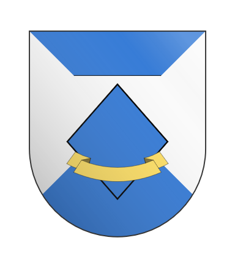

CURRENT PROJECTS
- crimson rose
- whisky company
- Unnamed clan star
The Crimson Rose

The (not quite) famous mercenary company in the innersphere. Known for their leaning towards morale jobs, and hit and run tactics.
My first completed paint project, it took me a few weeks, but im rather proud of my work!
Whisky Company
Whisky Company, 2nd Lyran guards of the Federated Commonwealth. They have a rather unique job among the Lyran guards, as they act as a QRF team, being dropped from orbit.
The second paint project, and far more ambitious then the first, containing 12 minis instead of 4. I estimate the project is about 15-20% complete.
Unnamed clan star
Once I finish Whisky company, I will move to paint a clan star, it will contain 5 mechs, and im still deciding on the paint scheme.